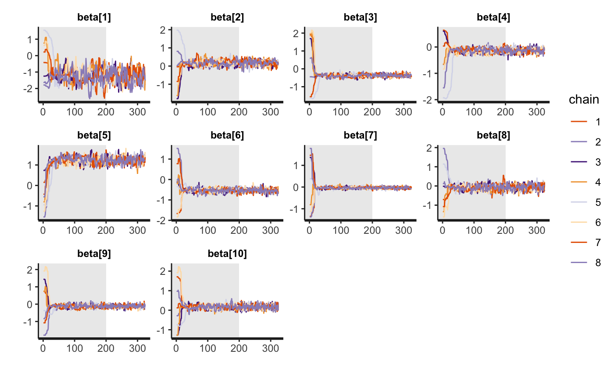
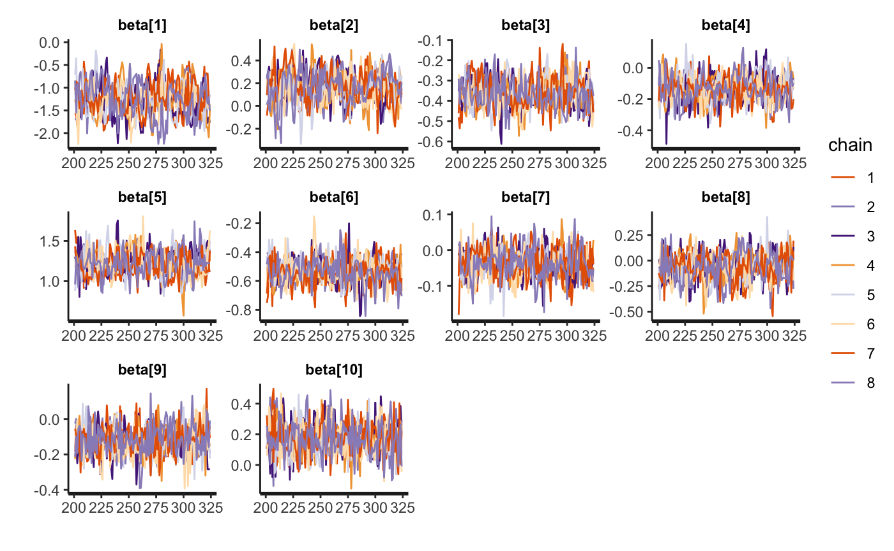
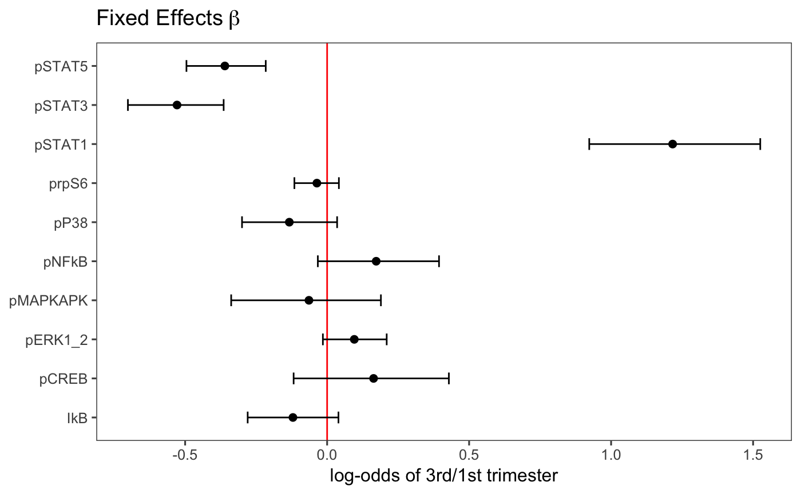
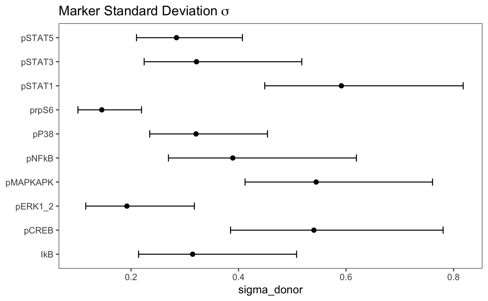
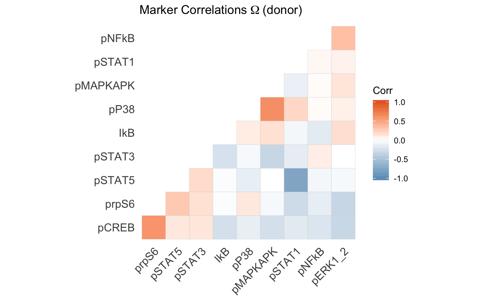
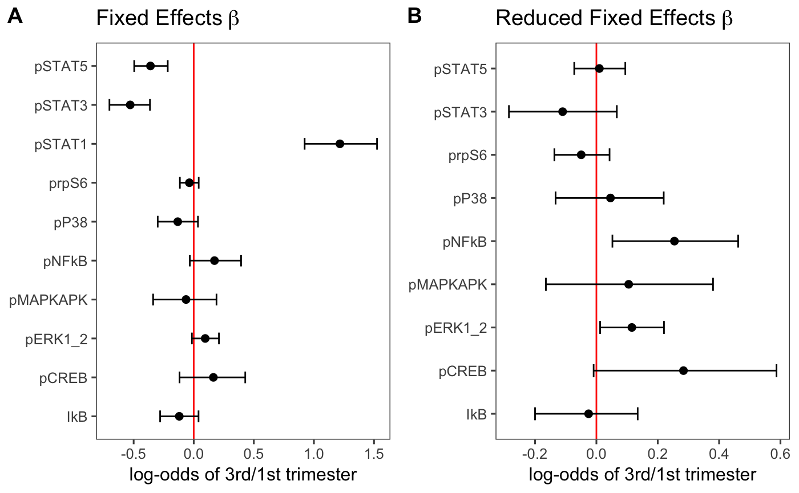

vignettes/logistic/Reanalysis_Aghaeepour2017.Rmd
Reanalysis_Aghaeepour2017.RmdReanalysis of mass cytometry data from Aghaeepour et al. (2017) using GLMM with multivariate donor and cell type random effects.
Parse input parameters.
## [1] Inf## [1] "0xdada"Install packages.
pkgs_needed = c("devtools","tidyverse","magrittr","SummarizedExperiment",
"ggthemes","cowplot")
letsinstall = setdiff(pkgs_needed, installed.packages())
if (length(letsinstall) > 0) {
source("http://bioconductor.org/biocLite.R")
biocLite(letsinstall)
}
devtools::install_github("ChristofSeiler/cytoeffect")Load packages.
Load SummarizedExperiment object from CytoGLMM workflow.
load("se_aghaeepour2017immune.Rdata")
exprs = assay(se_aghaeepour2017immune)
sample_info = rowData(se_aghaeepour2017immune)
sample_info_names = names(sample_info)
df_samples = cbind(as.data.frame(exprs), as.data.frame(sample_info))
df_samples %<>% as.tibble
protein_names = colData(se_aghaeepour2017immune) %>%
as.data.frame %>%
dplyr::filter(type == "function") %>%
.$protein_nameTransform counts.
Cells count of subsets:
## # A tibble: 379 x 4
## # Groups: term, celltype [24]
## term celltype donor n
## <fct> <chr> <chr> <int>
## 1 1st trimester intMC PTLG001 1
## 2 3rd trimester gdT PTLG018 1
## 3 3rd trimester gdT PTLG019 1
## 4 3rd trimester gdT PTLG020 1
## 5 3rd trimester intMC PTLG009 1
## 6 3rd trimester ncMC PTLG018 1
## 7 3rd trimester intMC PTLG018 3
## 8 3rd trimester ncMC PTLG009 3
## 9 1st trimester gdT PTLG020 4
## 10 3rd trimester intMC PTLG004 5
## # ... with 369 more rows## # A tibble: 379 x 4
## # Groups: term, celltype [24]
## term celltype donor n
## <fct> <chr> <chr> <int>
## 1 1st trimester CD4+Tmem PTLG009 35076
## 2 3rd trimester CD4+Tmem PTLG007 34303
## 3 1st trimester CD4+Tmem PTLG003 30796
## 4 3rd trimester CD4+Tmem PTLG009 29886
## 5 1st trimester CD4+Tmem PTLG007 28958
## 6 1st trimester CD4+Tnaive PTLG022 27953
## 7 1st trimester CD4+Tmem PTLG024 27592
## 8 3rd trimester CD4+Tnaive PTLG005 27318
## 9 3rd trimester CD4+Tnaive PTLG022 25901
## 10 3rd trimester CD4+Tnaive PTLG001 24423
## # ... with 369 more rowsSubsample to only one cell type and one donor.
df_samples_subset = df_samples %>% dplyr::filter(celltype == "NK")
df_samples_subset %<>% dplyr::select(protein_names,sample_info_names)
#df_samples_subset = df_samples %>% dplyr::select(protein_names,sample_info_names)Subsample cells so that to a maximum number of cells per celltype and donor.
if(nrow(df_samples_subset) > ncells) {
set.seed(seed)
# subsample depending on max cell count
df_count = df_samples_subset %>% group_by(donor) %>% tally() %>%
mutate(nnew = ifelse(n > ncells,ncells,n))
# create table with a data frame in one column
df_nested = df_samples_subset %>% group_by(donor) %>% nest() %>%
left_join(df_count,by = "donor")
# subsample per donor
df_samples_subset = df_nested %>%
mutate(samp = map2(data, nnew, sample_n)) %>%
dplyr::select(donor, samp) %>%
unnest()
}Subset cells count.
## # A tibble: 32 x 4
## # Groups: term, celltype [2]
## term celltype donor n
## <fct> <chr> <chr> <int>
## 1 3rd trimester NK PTLG024 2380
## 2 3rd trimester NK PTLG001 3125
## 3 3rd trimester NK PTLG020 3230
## 4 1st trimester NK PTLG020 3412
## 5 1st trimester NK PTLG001 3474
## 6 3rd trimester NK PTLG009 3764
## 7 1st trimester NK PTLG018 4083
## 8 1st trimester NK PTLG024 4100
## 9 1st trimester NK PTLG010 4273
## 10 3rd trimester NK PTLG019 4542
## # ... with 22 more rows## # A tibble: 32 x 4
## # Groups: term, celltype [2]
## term celltype donor n
## <fct> <chr> <chr> <int>
## 1 1st trimester NK PTLG008 13395
## 2 1st trimester NK PTLG022 8222
## 3 1st trimester NK PTLG003 8087
## 4 3rd trimester NK PTLG008 7953
## 5 3rd trimester NK PTLG018 7620
## 6 1st trimester NK PTLG029 7211
## 7 1st trimester NK PTLG019 6671
## 8 1st trimester NK PTLG012 6624
## 9 3rd trimester NK PTLG004 6501
## 10 3rd trimester NK PTLG002 6120
## # ... with 22 more rowsSample from posterior distribution (initialization details in paper).
obj = cytoeffect::glmm(df_samples_subset, protein_names,
condition = "term", group = "donor",
iter = 325, warmup = 200, num_chains = ncores,
eta = 1.0)
save(obj,file = paste0("cytoeffect_ncells",ncells,".Rdata"))Traceplot of posterior samples.


Some more MCMC diagnostics. According to empirically findings, Rhat > 1.1 is usually indicative of problems in the fit.
pars = c("beta","sigma_donor","L_donor","z_donor")
tb = summary(obj$fit_mcmc,
pars = pars)$summary %>%
as.tibble(rownames = "pars", .before = 1) %>%
select(pars, n_eff, Rhat)
tb %<>% na.omit() # Stan fills upper triangle with zeros
tb %>% arrange(n_eff)## # A tibble: 263 x 3
## pars n_eff Rhat
## <chr> <dbl> <dbl>
## 1 beta[1] 256. 1.02
## 2 z_donor[7,1] 259. 1.02
## 3 z_donor[11,1] 266. 1.02
## 4 z_donor[14,1] 270. 1.02
## 5 z_donor[12,1] 272. 1.02
## 6 z_donor[16,1] 273. 1.02
## 7 z_donor[3,1] 274. 1.02
## 8 z_donor[8,1] 278. 1.02
## 9 z_donor[9,1] 281. 1.02
## 10 z_donor[13,1] 287. 1.02
## # ... with 253 more rows## # A tibble: 263 x 3
## pars n_eff Rhat
## <chr> <dbl> <dbl>
## 1 z_donor[7,1] 259. 1.02
## 2 z_donor[8,1] 278. 1.02
## 3 beta[1] 256. 1.02
## 4 z_donor[16,1] 273. 1.02
## 5 z_donor[12,1] 272. 1.02
## 6 z_donor[11,1] 266. 1.02
## 7 z_donor[14,1] 270. 1.02
## 8 z_donor[13,1] 287. 1.02
## 9 z_donor[12,2] 323. 1.02
## 10 z_donor[3,1] 274. 1.02
## # ... with 253 more rows## # A tibble: 1 x 2
## min max
## <dbl> <dbl>
## 1 256. 2488.## # A tibble: 1 x 2
## min max
## <dbl> <dbl>
## 1 0.994 1.02Plot fixed effects.
p_full = plot(obj, type = "beta") +
ggtitle(expression("Fixed Effects"~beta)) +
xlab("log-odds of 3rd/1st trimester")
p_full
Extract log-odds for pSTAT1.
post_beta = rstan::extract(obj$fit_mcmc, pars = "beta")[[1]]
post_beta %<>% as.tibble
names(post_beta) = c("intercept",obj$protein_names)
quantile(post_beta$pSTAT1, probs = c(0.025, 0.975))## 2.5% 97.5%
## 0.923023 1.525243## 2.5% 97.5%
## 2.516887 4.596260Plot random effects.

Plot posterior correlations.

Refit model to test potentional collider confounding.
protein_names = protein_names[-which(protein_names == "pSTAT1")]
obj = cytoeffect::glmm(df_samples_subset, protein_names,
condition = "term", group = "donor",
iter = 325, warmup = 200, num_chains = ncores,
eta = 1.0)
save(obj,file = paste0("cytoeffect_ncells_collider",ncells,".Rdata"))p_reduced = plot(obj, type = "beta") +
ggtitle(expression("Reduced Fixed Effects"~beta)) +
xlab("log-odds of 3rd/1st trimester")
plot_grid(p_full, p_reduced, labels = "AUTO")
## R version 3.5.1 (2018-07-02)
## Platform: x86_64-apple-darwin15.6.0 (64-bit)
## Running under: macOS 10.14.3
##
## Matrix products: default
## BLAS: /Library/Frameworks/R.framework/Versions/3.5/Resources/lib/libRblas.0.dylib
## LAPACK: /Library/Frameworks/R.framework/Versions/3.5/Resources/lib/libRlapack.dylib
##
## locale:
## [1] en_US.UTF-8/en_US.UTF-8/en_US.UTF-8/C/en_US.UTF-8/en_US.UTF-8
##
## attached base packages:
## [1] parallel stats4 stats graphics grDevices utils datasets
## [8] methods base
##
## other attached packages:
## [1] bindrcpp_0.2.2 cowplot_0.9.3
## [3] ggthemes_4.0.1 SummarizedExperiment_1.10.1
## [5] DelayedArray_0.6.6 BiocParallel_1.14.2
## [7] matrixStats_0.54.0 Biobase_2.40.0
## [9] GenomicRanges_1.32.7 GenomeInfoDb_1.16.0
## [11] IRanges_2.14.12 S4Vectors_0.18.3
## [13] BiocGenerics_0.26.0 magrittr_1.5
## [15] forcats_0.3.0 stringr_1.3.1
## [17] dplyr_0.7.7 purrr_0.2.5
## [19] readr_1.1.1 tidyr_0.8.2
## [21] tibble_1.4.2 ggplot2_3.1.0
## [23] tidyverse_1.2.1 cytoeffect_0.1.0
## [25] Rcpp_0.12.19 BiocStyle_2.8.2
##
## loaded via a namespace (and not attached):
## [1] nlme_3.1-137 bitops_1.0-6 fs_1.2.6
## [4] lubridate_1.7.4 progress_1.2.0 httr_1.3.1
## [7] rprojroot_1.3-2 rstan_2.18.1 tools_3.5.1
## [10] backports_1.1.2 utf8_1.1.4 R6_2.3.0
## [13] lazyeval_0.2.1 colorspace_1.3-2 withr_2.1.2
## [16] tidyselect_0.2.5 gridExtra_2.3 prettyunits_1.0.2
## [19] processx_3.2.0 compiler_3.5.1 cli_1.0.1
## [22] rvest_0.3.2 xml2_1.2.0 desc_1.2.0
## [25] labeling_0.3 bookdown_0.7 scales_1.0.0
## [28] checkmate_1.8.5 callr_3.0.0 rappdirs_0.3.1
## [31] pkgdown_1.3.0 commonmark_1.7 digest_0.6.18
## [34] StanHeaders_2.18.0 rmarkdown_1.10 XVector_0.20.0
## [37] base64enc_0.1-3 pkgconfig_2.0.2 htmltools_0.3.6
## [40] rlang_0.3.0.1 readxl_1.1.0 rstudioapi_0.8
## [43] bindr_0.1.1 jsonlite_1.5 RCurl_1.95-4.11
## [46] inline_0.3.15 GenomeInfoDbData_1.1.0 loo_2.0.0
## [49] Matrix_1.2-14 fansi_0.4.0 munsell_0.5.0
## [52] stringi_1.2.4 yaml_2.2.0 zlibbioc_1.26.0
## [55] MASS_7.3-51 pkgbuild_1.0.2 plyr_1.8.4
## [58] grid_3.5.1 crayon_1.3.4 lattice_0.20-35
## [61] haven_1.1.2 hms_0.4.2 batchtools_0.9.11
## [64] knitr_1.20 ps_1.2.0 pillar_1.3.0
## [67] base64url_1.4 reshape2_1.4.3 glue_1.3.0
## [70] evaluate_0.12 data.table_1.11.8 modelr_0.1.2
## [73] cellranger_1.1.0 gtable_0.2.0 assertthat_0.2.0
## [76] xfun_0.4 broom_0.5.0 roxygen2_6.1.1
## [79] ggcorrplot_0.1.2 memoise_1.1.0 brew_1.0-6Aghaeepour, Nima, Edward A. Ganio, David Mcilwain, Amy S. Tsai, Martha Tingle, Van GassenSofie, Dyani K. Gaudilliere, et al. 2017. “An Immune Clock of Human Pregnancy.” Science Immunology 2 (15): eaan2946. https://doi.org/10.1126/sciimmunol.aan2946.